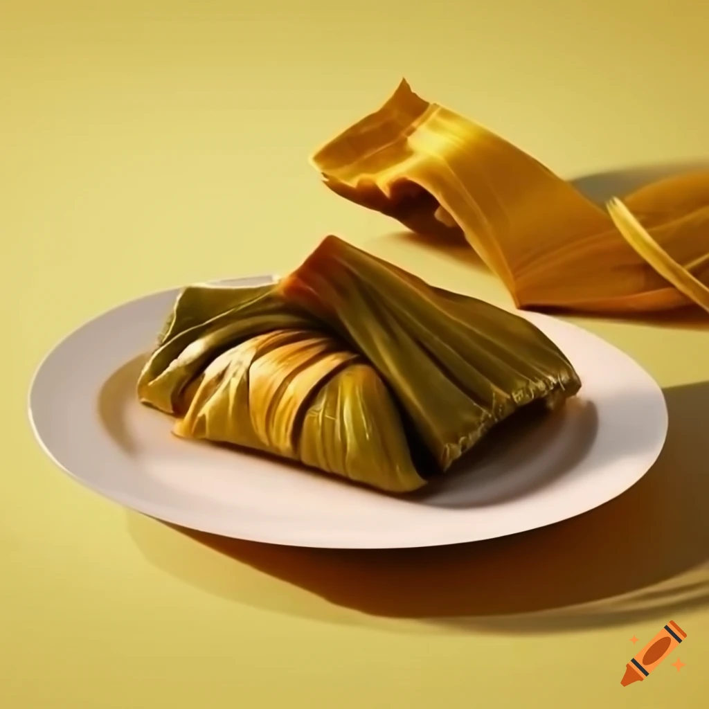

Tamales
Składniki:
2,5 szklanki mąki kukurydzianej
1/2 szklanki oliwy lub roztopionego smalcu
1/2 szklanki bulionu (warzywnego lub drobiowego)
1/2 łyżeczki proszku do pieczenia
Sól do smaku
Około 2 filiżanek ulubionego nadzienia, takiego jak mięso (np. duszone mięso drobiowe, wieprzowe lub wołowe), warzywa (np. papryka, kukurydza, cebula), lub owoce (np. ananas)
Dodatkowo: Przyprawy do smaku (np. kminek, chili, czosnek, cebula w proszku)
Świeże liście kukurydzy (jeśli są dostępne), albo liście paproci lub papier do pieczenia

Instrukcje:
Przygotuj nadzienie: Jeśli używasz mięsa, drobno je posiekaj i podsmaż na patelni. Dodaj warzywa i przyprawy do smaku. Gotuj, aż mięso będzie miękkie i smaczne. Odstaw do ostygnięcia.
Przygotuj masę: W misce wymieszaj mąkę kukurydzianą, proszek do pieczenia i sól. Stopniowo dodawaj bulion i oliwę (lub smalec), mieszając, aż uzyskasz gładką, ale niekleistą konsystencję.
Przygotuj liście kukurydzy: Jeśli używasz świeżych liści kukurydzy, namocz je w ciepłej wodzie przez kilka minut, aby były bardziej elastyczne.
Zawijanie tamales:
Nałóż około 2 łyżki masy na środek liścia kukurydzy lub papieru do pieczenia.
Rozprowadź masę na powierzchni liścia, pozostawiając miejsce na nadzienie.
Nałóż łyżkę nadzienia na środek masy.
Zawiń liść kukurydzy wokół masy, formując owinięte, długie pakunki.
Jeśli używasz papieru do pieczenia, możesz go zwijać w taki sam sposób jak liście kukurydzy.
Gotowanie:
Umieść tamales w dużym garnku parowym.
Dodaj trochę wody na dnie garnka, ale upewnij się, że poziom wody jest poniżej poziomu tamales.
Gotuj na parze przez około 1,5-2 godziny, aż masa będzie gotowa i liście będą łatwo oddzielone od tamales.
Podawanie: Otwórz liście kukurydzy lub papier do pieczenia i podawaj tamales gorące, ewentualnie z ulubionymi dodatkami, takimi jak sos salsa czy kwaśna śmietana.